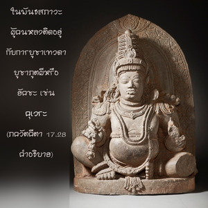

สิ่งใดที่กระทำไปเพื่อบูชา ให้ทาน หรือบำเพ็ญเพียร โดยปราศจากความศรัทธาในองค์ภควานฺ โอ้ โอรสพระนาง ปฺฤถา จะไม่ถาวร เรียกว่า ‘อสตฺ’ และไม่มีประโยชน์ทั้งในชาตินี้และชาติหน้า

สิ่งใดที่กระทำไปโดยไม่มีจุดมุ่งหมายทิพย์ ไม่ว่าจะเป็นการบูชา การให้ทาน หรือการบำเพ็ญเพียรจะไร้ประโยชน์ ดังนั้นโศลกนี้กล่าวว่ากิจกรรมเหล่านี้น่ารังเกียจ ทุกสิ่งทุกอย่างควรทำเพื่อองค์ภควานฺในกฺฤษฺณจิตสำนึก หากปราศจากความศรัทธาเช่นนี้และปราศจากคำแนะนำที่ถูกต้องจะไม่ได้รับผลประโยชน์อันใด คัมภีร์พระเวททั้งหมดแนะนำความศรัทธาแห่งองค์ภควานฺในการค้นหาคำสั่งสอนของพระเวททั้งหมด จุดมุ่งหมายสูงสุดคือ การเข้าใจองค์กฺฤษฺณ ไม่มีผู้ใดสามารถประสบความสำเร็จได้โดยไม่ปฏิบัติตามหลักการนี้ ฉะนั้นวิธีที่ดีที่สุดคือ ทำงานจากจุดเริ่มต้นในกฺฤษฺณจิตสำนึกภายใต้การนำของพระอาจารย์ทิพย์ผู้เชื่อถือได้ นั่นคือวิธีการที่จะทำให้ทุกสิ่งทุกอย่างประสบความสำเร็จ
ในพันธสภาวะผู้คนหลงติดอยู่กับการบูชาเทวดา บูชาภูตผี หรือ ยกฺษ เช่น กุเวร ระดับความดีดีกว่าระดับตัณหาและอวิชชา แต่ผู้ปฏิบัติกฺฤษฺณจิตสำนึกโดยตรงเป็นทิพย์อยู่เหนือสามระดับแห่งธรรมชาติวัตถุทั้งหมด ถึงแม้ว่าจะมีวิธีการค่อยๆพัฒนาการคบหาสมาคมกับสาวกผู้บริสุทธิ์ และปฏิบัติกฺฤษฺณจิตสำนึกโดยตรงเป็นวิธีที่ดีที่สุดซึ่งแนะนำไว้ในบทนี้ เพื่อให้ประสบความสำเร็จเช่นนี้ก่อนอื่นเราต้องแสวงหาพระอาจารย์ทิพย์ที่ดี และได้รับการฝึกฝนภายใต้การแนะนำของท่าน เราจึงจะสามารถบรรลุถึงความศรัทธาในองค์ภควานฺ เมื่อความศรัทธานั้นแกร่งกล้าขึ้นตามกาลเวลาจนมาถึงจุดที่เรียกว่า ความรักแห่งองค์ภควานฺ ความรักนี้คือ จุดมุ่งหมายสูงสุดของสิ่งมีชีวิต ดังนั้นเราควรปฏิบัติกฺฤษฺณจิตสำนึกโดยตรง นั่นคือสาส์นของบทที่สิบเจ็ดนี้